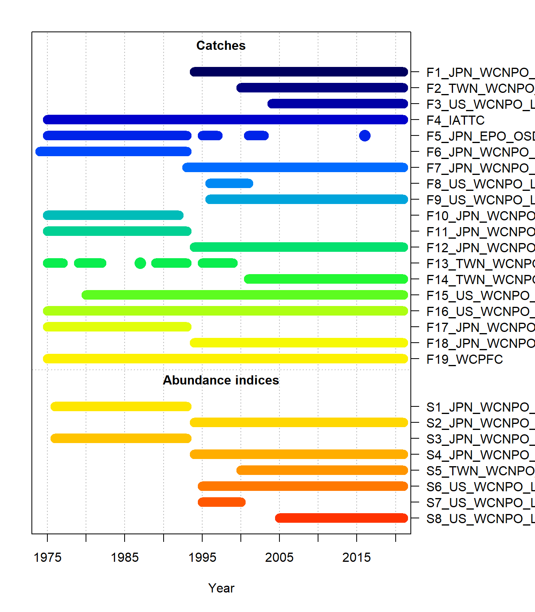
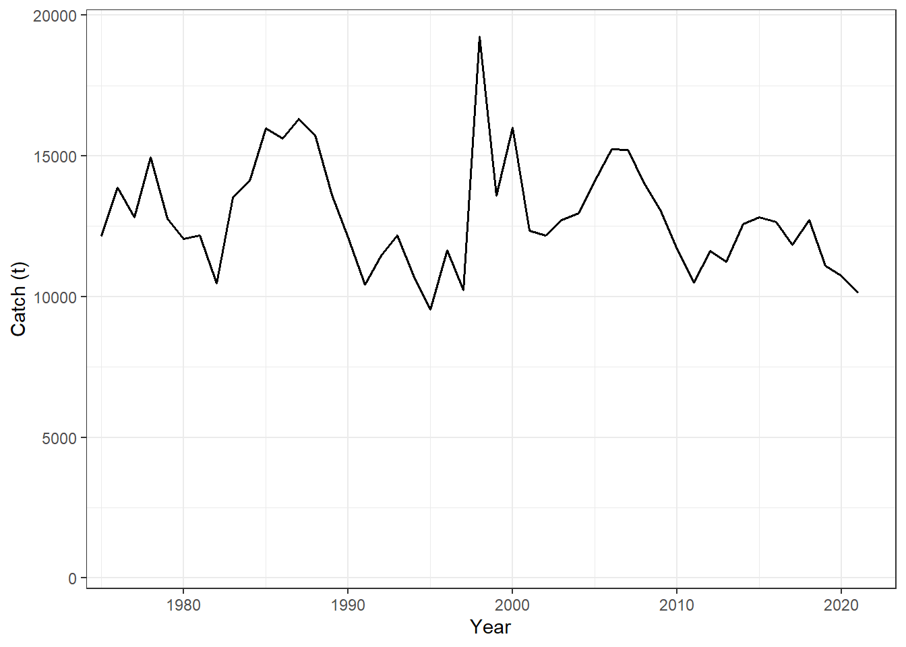
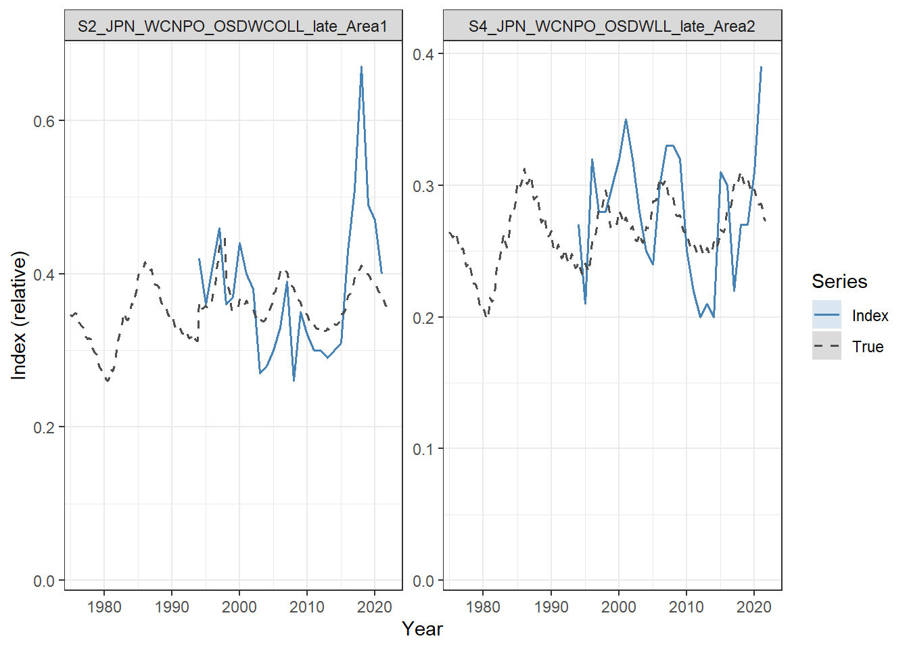
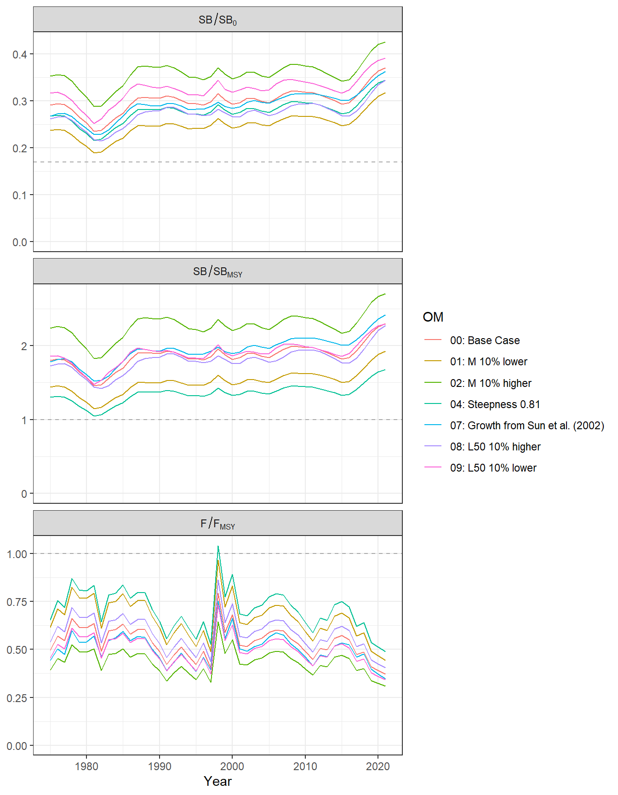

2 Operating Models
2.1 OM Conditioning
The 2023 ISC stock assessment of North Pacific swordfish, which was fitted with Stock Synthesis 3 (SS3; Methot and Wetzel (2013)), was used to generate the operating models (OMs).
The assessment is a two-sex model with 4 quarterly time steps per year, covering 1975–2021. It includes 19 fishing fleets and 8 CPUE indices (Figure 2.1; Table 2.1). Steepness of the Beverton-Holt stock-recruitment relationship is fixed at 0.9. See the assessment report for further details on the assessment structure and assumptions.
The OMs were constructed by importing the SS3 output of each assessment run, available from the WCNPOSWO-2023 repository, into the North Pacific swordfish MSE framework.
2.1.1 Catch Units
In the assessment, the catch of 8 of the 19 fishing fleets is in numbers of fish (thousands), and the catch of the remaining fleets is in biomass (t). Because the total allowable catch (TAC) management advice produced by the candidate management procedures (CMPs) is in units of biomass (tons), the catch of every fleet was imported in biomass, using the catch biomass predicted by SS3 for the fleets with catch in numbers.
2.1.2 Fleet Structure
To reduce run time, the 19 fishing fleets were combined into a single fleet in the operating models. The combined fleet reproduces the historical fishing mortality-at-age of the individual fleets, with selectivity, retention, and weight-at-age weighted by the fishing mortality of each fleet. This results in exactly the same fishery and population dynamics as an operating model that includes the 19 fleet structure. In the projection period, the relative contribution of each fleet (i.e., TAC allocation) is therefore assumed to be fixed at its recent pattern.

2.1.3 Indices of Abundance
Table 2.1 lists the CPUE indices in the assessment. The Japanese longline indices (Area 1 and Area 2; both split into an Early and Late phase) were selected to be used by the CMPs.
The index-based CMPs use the two that continue to the terminal year (S2 and S4; Figure 2.3). The surplus production CMPs also use the earlier Japanese longline series (S1 and S3; see Chapter 5).
Two of the indices (S5 and S8) were not fitted in the base case assessment (lambda = 0), and therefore were not included in the data passed to the CMPs.
S6, an index of recruitment, was also not used by the CMPs. This index has a higher CV than the Japanese longline indices, and as it does not track the adult population it did not provide any additional information that could improve the performance of the CMPs.
| Index | Years | Units | SS3 lambda | Used by CMPs |
|---|---|---|---|---|
| S1_JPN_WCNPO_OSDWLL_early_Area1 | 1976–1993 | Number | 1 | SP |
| S2_JPN_WCNPO_OSDWCOLL_late_Area1 | 1994–2021 | Number | 1 | IR, IT, SP |
| S3_JPN_WCNPO_OSDWLL_early_Area2 | 1976–1993 | Number | 1 | SP |
| S4_JPN_WCNPO_OSDWLL_late_Area2 | 1994–2021 | Number | 1 | IR, IT, SP |
| S5_TWN_WCNPO_DWLL_late | 2000–2021 | Number | 0 | |
| S6_US_WCNPO_LL_deep | 1995–2021 | Recruitment | 1 | |
| S7_US_WCNPO_LL_shallow_early | 1995–2000 | Number | 1 | |
| S8_US_WCNPO_LL_shallow_late | 2005–2021 | Number | 0 |

2.2 Base Case and Sensitivity OMs
2.2.1 OMs Included in the MSE
The 2023 assessment included sensitivity runs with alternative life-history parameters (natural mortality, steepness, growth, and maturity), catch assumptions, model settings, and CPUE indices. OMs were constructed from the base case and the 9 sensitivity runs with alternative life-history parameters (Table 2.2; Table 2.3). The other sensitivity runs are not currently included in the MSE.
Three of these runs are not included in the MSE:
- Run 03 (steepness 0.70): the control file sets steepness to 0.70, but the starter file initialises the parameters from the base case parameter file, where steepness is 0.9. Because steepness is fixed, the fitted model has steepness of 0.9 and the SS3 output is identical to the base case, so the run does not represent the steepness sensitivity.
- Runs 05 (steepness 0.99) and 06 (maximum size 10% larger): the SS3 fits estimate an implausibly large stock, with ln(R0) of 32.37 and 35.06 compared with 6.84 in the base case, and unfished spawning biomass of the order of \(10^{16}\) and \(10^{17}\) t. The stock in these OMs is therefore effectively unfished and unaffected by the catch.
The CMPs are tuned on the base case OM (Section 5.7) and their robustness is evaluated on the 6 included sensitivity OMs.
| OM | Description | Included | Reason for exclusion |
|---|---|---|---|
| 00 | Base Case | Yes | |
| 01 | M 10% lower | Yes | |
| 02 | M 10% higher | Yes | |
| 03 | Steepness 0.70 | No | Output identical to base case |
| 04 | Steepness 0.81 | Yes | |
| 05 | Steepness 0.99 | No | Implausibly large stock |
| 06 | Maximum size 10% larger | No | Implausibly large stock |
| 07 | Growth from Sun et al. (2002) | Yes | |
| 08 | L50 10% higher | Yes | |
| 09 | L50 10% lower | Yes |
| OM | Steepness | Mean female M | Female length at Amax (cm) | Female K | Female L50 (cm) | Unfished SB (t) |
|---|---|---|---|---|---|---|
| 00 | 0.9 | 0.251 | 226.3 | 0.246 | 143.7 | 99,808 |
| 01 | ” | 0.226 | ” | ” | ” | 108,062 |
| 02 | ” | 0.276 | ” | ” | ” | 94,875 |
| 03 | ” | ” | ” | ” | ” | 99,808 |
| 04 | 0.81 | ” | ” | ” | ” | 108,558 |
| 05 | 0.99 | ” | ” | ” | ” | 1.2e+16 |
| 06 | ” | ” | 248.9 | ” | ” | 2.4e+17 |
| 07 | ” | ” | 240.8 | 0.138 | ” | 124,347 |
| 08 | ” | ” | ” | ” | 158 | 93,176 |
| 09 | ” | ” | ” | ” | 129.3 | 104,632 |
2.2.2 Estimates of Stock Status
Table 2.4 summarizes the estimated stock status (SB/SB0 & SB/SBMSY), relative fishing mortality (F/FMSY), and the ratio of SBMSY to the equilibrium unfished spawning biomass (SB0), for the Base Case and the 6 sensitivity OMs that are included in the MSE. The MSY-based reference points for each OM are shown in Table 2.5.
Figure 2.4 shows time series plots of SB/SB0, SB/SBMSY, and F/FMSY for the Base Case and the 6 sensitivity OMs.
| OM | SB/SB0 | SB/SBMSY | F/FMSY | SBMSY/SB0 |
|---|---|---|---|---|
| 00: Base Case | 0.37 | 2.30 | 0.37 | 0.16 |
| 01: M 10% lower | 0.32 | 1.93 | 0.44 | 0.16 |
| 02: M 10% higher | 0.43 | 2.70 | 0.31 | 0.16 |
| 04: Steepness 0.81 | 0.34 | 1.68 | 0.49 | 0.21 |
| 07: Growth from Sun et al. (2002) | 0.36 | 2.42 | 0.35 | 0.15 |
| 08: L50 10% higher | 0.34 | 2.27 | 0.40 | 0.15 |
| 09: L50 10% lower | 0.39 | 2.29 | 0.34 | 0.17 |
| OM | FMSY | SBMSY (t) | MSY (t) |
|---|---|---|---|
| 00: Base Case | 0.393 | 16,629 | 15,355 |
| 01: M 10% lower | 0.356 | 18,317 | 14,680 |
| 02: M 10% higher | 0.433 | 15,487 | 16,429 |
| 04: Steepness 0.81 | 0.298 | 23,011 | 14,735 |
| 07: Growth from Sun et al. (2002) | 0.416 | 19,257 | 15,398 |
| 08: L50 10% higher | 0.361 | 14,394 | 15,125 |
| 09: L50 10% lower | 0.426 | 18,640 | 15,571 |
